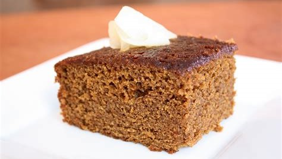

Gingerbread Cake
By Julie Clark
Gingerbread is soft and cake like. It’s baked in a loaf pan or in a cake
pan and is has the texture of any other sweet bread. Gingersnaps are a
crispier cookie that crunch when you eat them. This is where the term
“snap” comes from.

INGREDIENTS
- 1 cup whole milk
- 1 tsp baking soda
- 1 cup colasses
- 2 large eggs
- 1/2 cup room tempature butter
- 1/2 cup sugar
- 2 cups flour
- 1.5 tsp ground ginger
- 1 tsp ground cinnamon
- 1/8 tsp ground allspice
- 1/8 tsp ground nutmeg
INSTRUCTIONS
-
Preheat oven to 375 degrees. Prepare a 9 inch square baking pan by greasing bottom, sides and corners with butter.
-
Place milk in a saucepan and heat just until it begins to boil. Immediately remove from heat and stir in baking soda. Set aside.
-
In a large bowl, whisk together molasses and eggs.
-
Add butter to bowl and stir, mashing butter into the sides of the bowl to help reduce the size of the clumps. Some clumps will remain.
-
In another bowl, mix together sugar, flour, and spices. Add dry ingredients to wet ingredients alternately with the milk and whisk until smooth.
- Transfer batter to baking pan.
-
Bake for 30 minutes or until a toothpick inserted in the middle comes out clean. Place baking pan on a wire rack and cool for about 30 minutes before cutting into squares and serving.
-
Top with whipped cream, caramel sauce, powdered sugar, or your desired toppings.